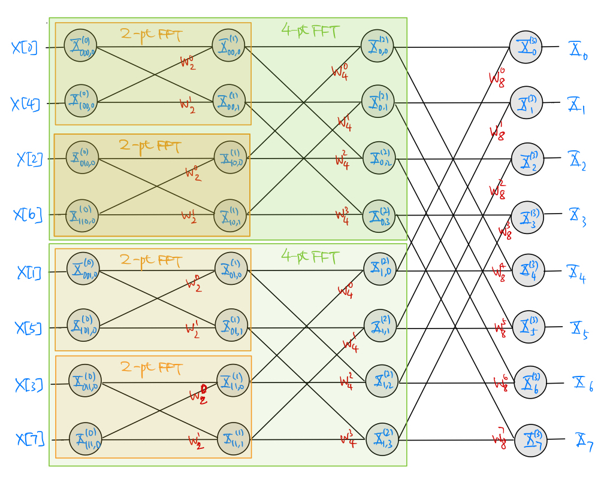
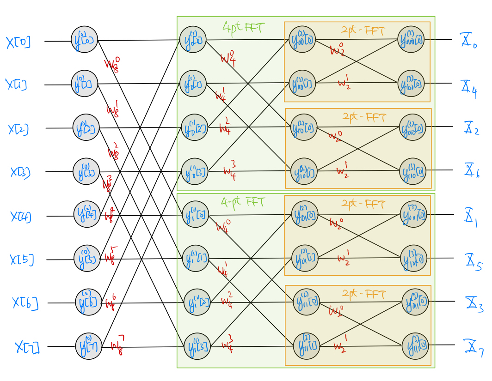

5.3. Fast Fourier Transform#
We use Fast Fourier Transform (FFT) to describe a general class of computationally efficient algorithms to calculate DFT and IDFT of any size.
The main idea behind any FFT algorithm is to look for repetitive patterns in the calculation of DFT/IDFT and store results of calculations that can be repeatedly reused later to reduce the total amount of calculations needed. In this sense, FFT trades computational (or time) complexity against storage complexity.
Typically, we look for the repetitive patterns by a divide-and-conquer approach:
Suppose we want to calculate the \(M\)-point DFT of a signal \(x[n]\). Write \(M=p_1 p_2 \cdots p_{\nu}\), where \(p_i\) is a factor of \(M\). Note that the factors in this deposition need not be distinct. Repetitive patterns can then be established by rearranging the (1-D) signal \(x[n]\) into a \(\nu\)-D array with sizes \(p_1, p_2, \ldots, p_\nu\). For simplicity, we will consider only the case of radix-2 (\(M=2^\nu\)) here.
Write \(\displaystyle w^k_M = e^{-j\frac{2\pi k}{M}}\). It is not hard to verify that the reduction rule for any product of terms in the form of \(w^k_M\) is the same as that for a sum of the fractions \(\frac{k}{M}\) modulo \(1\) (i.e., the reduction rule for the sum fraction removing any whole number part). For example, \(w^k_M \cdot w^{k'}_{M'} = w^l_N\) where \(\frac{l}{N} = \left(\frac{k}{M} + \frac{k'}{M'} \right) \bmod 1\).
Rewrite the forward DFT formula (5.2) in terms of \(w^k_M\):
(5.5)#\[\begin{equation} X_k = \sum_{k=0}^{M-1} x[n] w^{kn}_{M}. \end{equation}\]
5.3.1. Radix-2 Decimation-in-Time Algorithm#
Let \(x[n]\) be of length at most \(M=2^{\nu}\). We will use binary sequences of length at most \(\nu -1\) bits to index “sub-signals” generated from \(x[n]\). Let \(b\) be a binary sequence (\(b\) can be a null sequence). Then \(0b\) and \(1b\) denote concatenating a most significant bit to \(b\).
Define \(x^{(\nu)}[n] = x[n]\). For \(i=\nu-1, \nu-2, \ldots, 1\), define iteratively:
\[\begin{align*} x^{(i)}_{0b}[n] &= x^{(i+1)}_b [2n] \\ x^{(i)}_{1b}[n] &= x^{(i+1)}_b [2n+1] \end{align*}\]for each \(n=0,1,\ldots,2^i-1\) and each binary sequence \(b\) of length \(\nu-1-i\).
Note that the length of \(x^{(i)}_{b}[n]\) is \(2^i\). Write the \(2^i\)-point DFT of \(x^{(i)}_{b}[n]\) as:
\[\begin{align*} X^{(i)}_{b,k} &= \sum_{n=0}^{2^i-1} x^{(i)}_{b}[n] w^{kn}_{2^i} & k=0,1,\ldots, 2^i-1. \end{align*}\]Now, consider the forward DFT formula (5.5):
(5.6)#\[\begin{split}\begin{align} X_k &= \sum_{n=0}^{2^\nu-1} x^{(\nu)}[n] w^{kn}_{2^\nu} \\ &= \sum_{n=0}^{2^{\nu-1}-1} x^{(\nu)}[2n] w^{k(2n)}_{2^\nu} + \sum_{n=0}^{2^{\nu-1}-1} x^{(\nu)}[2n+1] w^{k(2n+1)}_{2^\nu} \\ &= \sum_{n=0}^{2^{\nu-1}-1} x^{(\nu-1)}_0[n] w^{kn}_{2^{\nu-1}} + w^{k}_{2^\nu} \left( \sum_{n=0}^{2^{\nu-1}-1} x^{(\nu-1)}_1[n] w^{kn}_{2^{\nu-1}} \right) & k=0,1,\ldots,2^\nu -1 \end{align}\end{split}\]Notice that the two sums in the last expression of (5.6) above are simply \(2^{\nu-1}\)-point DFTs. We may rewrite (5.6) in the following form:
(5.7)#\[\begin{split}\begin{align} X_k & = X^{(\nu-1)}_{0,k} + w^{k}_{2^\nu} X^{(\nu-1)}_{1,k} \\ X_{k+2^{\nu-1}} &= X^{(\nu-1)}_{0,k} +w^{k+2^{\nu-1}}_{2^\nu} X^{(\nu-1)}_{1,k} & k=0,1,\ldots,2^{\nu-1} -1 \end{align}\end{split}\]Repeat the decomposition above recursively, we get, for \(i=\nu-1, \nu-2, \ldots, 1\),
(5.8)#\[\begin{split}\begin{align} X^{(i)}_{b,k} & = X^{(i-1)}_{0b,k} + w^{k}_{2^i} X^{(i-1)}_{1b,k} \\ X^{(i)}_{b,k+2^{i-1}} &= X^{(i-1)}_{0b,k} +w^{k+2^{i-1}}_{2^i} X^{(i-1)}_{1b,k} \end{align}\end{split}\]for each \(k=0,1,\ldots,2^{i-1} -1\) and each binary sequence \(b\) of length \(\nu-i\) until reaching the trivial terminating case:
(5.9)#\[\begin{split}\begin{align} X^{(1)}_{b,0} &= X^{(0)}_{0b,0} + w^{0}_{2} X^{(0)}_{1b,0} = x^{(0)}_{0b}[0] + x^{(0)}_{1b}[0] \\ X^{(1)}_{b,1} &= X^{(0)}_{0b,0} + w^{1}_{2} X^{(0)}_{1b,0} = x^{(0)}_{0b}[0] - x^{(0)}_{1b}[0] \end{align}\end{split}\]for each binary sequence \(b\) of length \(\nu-1\). Note that in (5.9), for each binary sequence \(b\) of length \(\nu\), \(x^{(0)}_{b}[0] = x[b]\) where \(b\) in \(x[b]\) should be interpreted as the standard binary representation of the time index \(n\) in \(x[n]\). For example, if \(\nu = 4\), \(x^{(0)}_{1000}[0] = x[1000] = x[8]\).
The decomposition from (5.7) to (5.9) shows that the original \(2^{\nu}\)-point DFT of \(x[n]\) can be obtained as a simple combination of two \(2^{\nu-1}\)-point DFTs (see (5.7)), each of which can be calculated from two \(2^{\nu-2}\)-point DFTs and so on (see (5.7)) until the terminating case of \(2\)-point DFTs that can be calculated trivially from the time-domain signal \(x[n]\) (see (5.9)). This recursive process is best expressed by the well known butterfly diagram. For example, see the following decimation-in-time butterfly diagram for the case of \(M=2^3 = 8\):
In general, we need to store the intermediate values generated in the FFT calculation. Referring back to the butterfly diagram, we need to store \(X^{(i)}_{b,k}\) in the circles of each of the \(\nu\) stages of recursive calculation. Each stage requires:
\(2^{\nu}\) complex-valued storage units, and
at most \(2^{\nu}\) complex multiplications and \(2^{\nu}\) complex additions.
Hence, both the computational complexity and the storage requirement are \(\mathcal{O}(\nu 2^{\nu}) = \mathcal{O}(M \log_2 M)\). For comparison, the computation complexity of directly using the forward DFT formula (5.2) to calculate the DFT is \(\mathcal{O}(M^2)\) and the storage requirement is \(\mathcal{O}(M)\). Thus, the FFT algorithm provides a significant reduction in the computational complexity, requiring a relatively small increase in the storage requirement.
We see from the butterfly diagram that the input \(x[n]\) to the butterfly is shuffled (decimated) according to the binary pattern \(b\) in the \(i=0\) stage. The bit reversal process (from MSB to LSB) provides a simple mnemonic to establish the order of shuffling.
Rewriting the inverse DFT formula (5.3) in the form below
\[\begin{equation*} M x[n] = \sum_{k=0}^{M-1} X_k (w^{kn}_M)^* \end{equation*}\]indicates that the same butterfly above can be used to calculate IDFT if one replaces:
the butterfly input (still needs to shuffle the order) with \(X_k\),
the butterfly output with \(Mx[n]\), and
all weighting factors with their respective complex conjugates.
{kind=link}
5.3.2. Radix-2 Decimation-in-Frequency Algorithm#
The decimation-in-time algorithm is not the only way to decompose DFT recursively. The following decimation-in-frequency decomposition is another common approach.
Again, assume \(x[n]\) is of at most length \(M=2^{\nu}\). Define \(y^{(0)}[n] = x[n]\) and \(z^{(0)}[n] = w^n_{2^\nu} y^{(0)}[n]\). For \(i=1,2,\ldots, \nu\), define iteratively
(5.10)#\[\begin{split}\begin{align} y^{(i)}_{0b}[n] &= y^{(i-1)}_b[n] + y^{(i-1)}_b[n+2^{\nu-i}] \\ y^{(i)}_{1b}[n] &= z^{(i-1)}_b[n] + z^{(i-1)}_b[n+2^{\nu-i}] \\ z^{(i)}_{0b}[n] &= w^n_{2^{\nu-i}} y^{(i)}_{0b}[n] \\ z^{(i)}_{1b}[n] &= w^n_{2^{\nu-i}} y^{(i)}_{1b}[n] \end{align}\end{split}\]for each \(n=0,1,\ldots, 2^{\nu-i}-1\) and each binary sequence \(b\) of length \(i-1\).
Note that the length of \(y^{(i)}_{b}[n]\) is \(2^{\nu-i} \). Write the \(2^{\nu-i}\)-point DFT of \(y^{(i)}_{b}[n]\) as
\[\begin{align*} Y^{(i)}_{b,k} &= \sum_{n=0}^{2^{\nu-i}-1} y^{(i)}_{b}[n] w^{kn}_{2^{\nu-i}} & k=0,1,\ldots, 2^{\nu-i}-1. \end{align*}\]The forward DFT formula (5.2) gives
(5.11)#\[\begin{split}\begin{align} X_{2k} &= Y^{(0)}_{2k} \\ &= \sum_{n=0}^{2^{\nu}-1} y^{(0)}[n] w^{2kn}_{2^{\nu}} \\ &= \sum_{n=0}^{2^{\nu-1}-1} y^{(0)}[n] w^{kn}_{2^{\nu-1}} + \sum_{n=0}^{2^{\nu-1}-1} y^{(0)}[n+2^{\nu-1}] w^{k(n+2^{\nu-1})}_{2^{\nu-1}} \\ &= \sum_{n=0}^{2^{\nu-1}-1} y^{(1)}_{0}[n] w^{kn}_{2^{\nu-1}} \\ &= Y^{(1)}_{0,k} \\ X_{2k+1} &= Y^{(0)}_{2k+1} \\ &= \sum_{n=0}^{2^{\nu}-1} y^{(0)}[n] w^{(2k+1)n}_{2^{\nu}} \\ &= \sum_{n=0}^{2^{\nu-1}-1} z^{(0)}[n] w^{kn}_{2^{\nu-1}} + \sum_{n=0}^{2^{\nu-1}-1} z^{(0)}[n+2^{\nu-1}] w^{k(n+2^{\nu-1})}_{2^{\nu-1}} \\ &= \sum_{n=0}^{2^{\nu-1}-1} y^{(1)}_{1}[n] w^{kn}_{2^{\nu-1}} \\ &= Y^{(1)}_{1,k} \end{align}\end{split}\]for each \(k=0,1,\ldots, 2^{\nu-1}-1\).
Continuing on the same decomposition recursively, we get, for \(i=1,2,\ldots,\nu-1\):
(5.12)#\[\begin{split}\begin{align} Y^{(i)}_{b,2k} &= Y^{(i+1)}_{0b,k} \\ Y^{(i)}_{b,2k+1} &= Y^{(i+1)}_{1b,k} \end{align}\end{split}\]for each \(k=0,1,\ldots, 2^{\nu-i-1}-1\) and each binary sequence \(b\) of length \(i\) until the terminating case of
(5.13)#\[\begin{equation} Y^{(\nu)}_{b,0} = y^{(\nu)}_{b}[0] \end{equation}\]is reached.
Combing (5.11)-(5.13), it is easy to check that \(X_b = Y^{\nu}_{b,0} = y^{\nu}_{b}[0]\) where the index \(b\) in \(X_b\) should be interpreted as the standard binary representation of the index \(k\) of the \(2^\nu\)-point FFT coefficient \(X_k\). As a result, we may use (5.10) to recursively calculate the \(y^{(i)}_b[n]\)’s until reaching the \(y^{(\nu)}_n[0]\)’s, which give us the \(2^\nu\)-point FFT \(X_k\).
Once again, the recursive calculation process is best expressed by a (different) butterfly diagram. For example, see the following decimation-in-frequency butterfly diagram for the case of \(M=2^3 = 8\):
Unlike the decimation-in-time butterfly, it is the butterfly output \(X_k\) that is shuffled (decimated) according to the binary pattern \(b\) in the \(i=\nu\) stage. The bit reversal process still establishes the order of shuffling.
{kind=link}